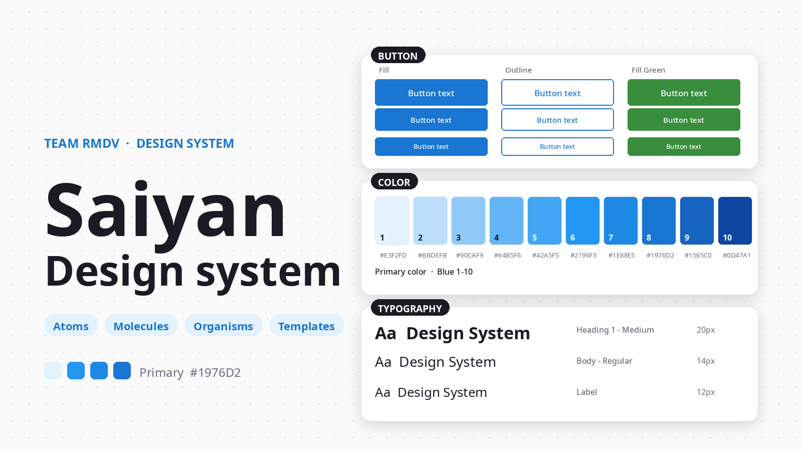
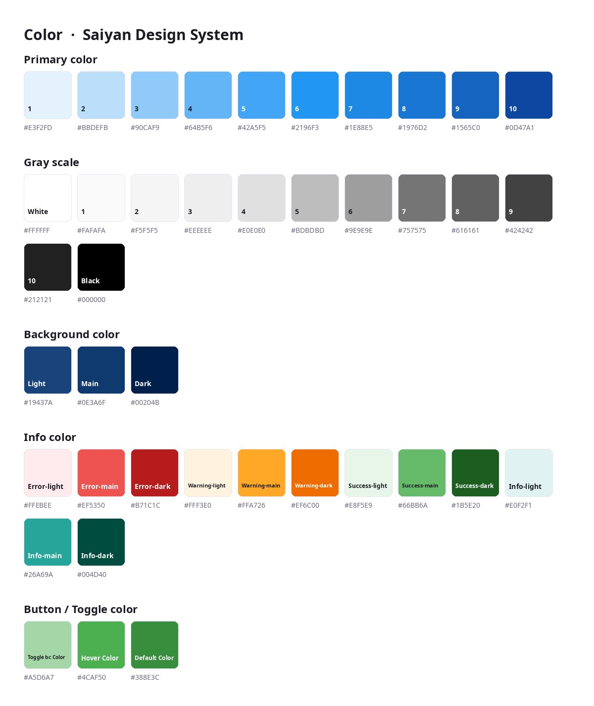
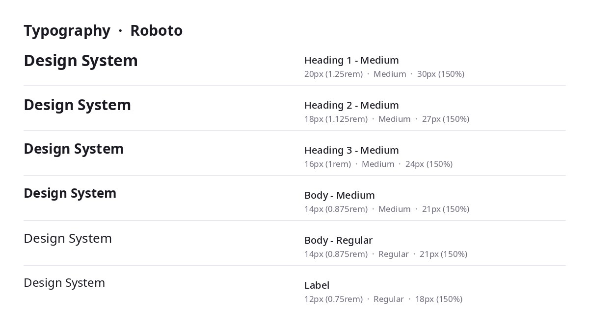
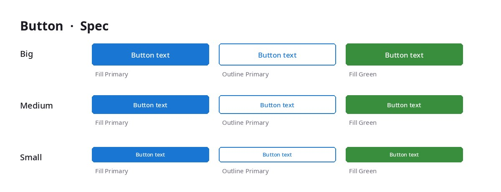

Saiyan Design System
為保護客戶/作品原始設計檔案，本頁面展示的設計作品均經過降畫質處理。
Saiyan 產品的設計系統，以 Atomic Design 方法組織：從色彩、字體等基礎元素，到按鈕、輸入框等元件，再組裝成表格、對話框與整頁模板，統一跨產品的視覺與操作體驗。系統持續建置中（In Progress）。

設計系統架構.
整個系統以 Atomic Design 分成四層：原子是最基本的色彩與字體，分子是可獨立使用的元件，有機體是元件組成的複合區塊，模板則是整頁的版面骨架。
整個檔案共 39 個規範頁：Atoms 12 頁、Molecules 16 頁、Organisms 6 頁、Templates 5 頁，另有 Cover 與 Library 頁。
色彩.
主色是 10 階藍色，Blue-8（#1976D2）是主要品牌色；灰階負責文字與背景層次；資訊色對應錯誤、警告、成功與資訊四種狀態；另有深藍背景色與按鈕、開關專用綠色。色碼大多參考 Quasar。
Primary color 主色
1 Msg Bg Color#E3F2FD
2#BBDEFB
3 Disabled Color#90CAF9
4#64B5F6
5#42A5F5
6 Hover Color#2196F3
7#1E88E5
8 Primary Color#1976D2
9#1565C0
10#0D47A1
Gray scale 灰階
White#FFFFFF
1#FAFAFA
2#F5F5F5
3#EEEEEE
4#E0E0E0
5 Border Color#BDBDBD
6 Button disabled Color#9E9E9E
7#757575
8#616161
9#424242
10#212121
Black Font Color#000000
Background color 背景色
Light DarkBlue#19437A
Main DarkBlue#0E3A6F
Dark DarkBlue#00204B
Info color 資訊色
Error-light Red#FFEBEE
Error-main Red#EF5350
Error-dark Red#B71C1C
Warning-light Orange#FFF3E0
Warning-main Orange#FFA726
Warning-dark Orange#EF6C00
Success-light Green#E8F5E9
Success-main Green#66BB6A
Success-dark Green#1B5E20
Info-light Teal#E0F2F1
Info-main Teal#26A69A
Info-dark Teal#004D40
Button / Toggle color 按鈕與開關色
Toggle bc Color Green#A5D6A7
Hover Color Green#4CAF50
Default Color Green#388E3C

字體排版.
全系統統一使用 Roboto，字體大小以 1rem = 16px 為基準，共六級字階，行高一律 150%，字距 0px。
- 文字請統一用 #000000
- font size 的 Base 1rem 是 16px
- Wording 定義：
- Title / Label / Table header 一律採用 Title Case
- 其他採用 Sentence Case
| Type | Case | Font family | Font size | Font weight | Line height | Letter spacing |
|---|---|---|---|---|---|---|
| Heading 1 - Medium | 大標題 | Roboto | 20px (1.25rem) | Medium | 30px (150%) | 0px |
| Heading 2 - Medium | 中標題 | Roboto | 18px (1.125rem) | Medium | 27px (150%) | 0px |
| Heading 3 - Medium | 小標題 | Roboto | 16px (1rem) | Medium | 24px (150%) | 0px |
| Body - Medium | Body / 表格 / 按鈕文字 | Roboto | 14px (0.875rem) | Medium | 21px (150%) | 0px |
| Body - Regular | Body / 表格 / 按鈕文字 | Roboto | 14px (0.875rem) | Regular | 21px (150%) | 0px |
| Label | 輸入框 Label | Roboto | 12px (0.75rem) | Regular | 18px (150%) | 0px |

元件.
每個元件都有 SPEC 規格與 USAGE 使用說明：尺寸、樣式、狀態與使用情境都寫清楚，開發與設計照同一份規範走。
- 主要 Button 用 Fill，背景色 Blue-8（Primary #1976D2）；次要 Button 用 Outline，邊框 Blue-8；下載 Button 用 Fill，背景色 Green
- 按鈕文字用 Sentence Case，例：Button text
- 按鈕 min width 80px；表單按鈕寬度 335px
- 用於提交、搜尋、清除或下載時：未輸入資料是 Disable 狀態，輸入資料後切換為 Default；點擊後進入 Loading 狀態，提供操作回饋

其他元件與模板的規格都在 Figma 檔案裡，分子層 16 個、有機體層 6 個、模板層 5 個，詳見上方架構。